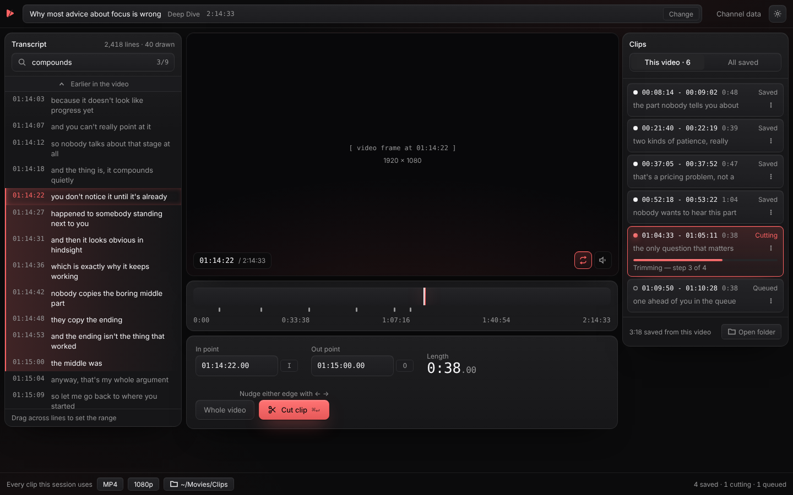
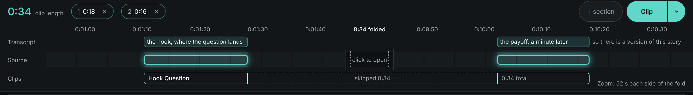

Download just the part of a video you need.
Paste a YouTube link, find the moment in the transcript, mark in and out, and download only that. Edit it in Final Cut, CapCut or Premiere (coming).
Choose your platform Pick the file for your computer belowFree, including for paid client work. Runs on your computer; nothing is uploaded.

Several moments, one file.
Mark a moment near the start and another from an hour later. They come down joined, in order, as one download.

Opening it the first time.
Clipr is not signed with a paid certificate yet, so your computer warns you once. That means “we cannot verify who published this”, not “this is dangerous”.
macOS
Drag to Applications, paste one line
- Open the .dmg and drag Clipr into Applications.
-
Open Terminal: press ⌘Space, type
terminal, press Return. Then paste this and press Return.
xattr -dr com.apple.quarantine /Applications/Clipr.app && open /Applications/Clipr.appIt clears the flag and opens Clipr for you — no need to go back to Applications.
&& means the second half
only runs if that worked, and it launches the app. From then on you
double-click Clipr like anything else.
I would rather not use Terminal
Double-click Clipr and let macOS refuse it. Then open System Settings → Privacy & Security, scroll down to the Security section, and click Open Anyway next to the message about Clipr. Confirm with Touch ID or your password. The button only appears after macOS has blocked the app once, so the refusal is a necessary first step rather than a failure.
Windows
Keep, Unblock, Run anyway
Windows gets in the way twice: once in the browser, once when you run the file. These are the steps that work, in order.
- If your browser blocks the download — press CtrlJ to open Downloads, click the ⋯ next to the file and choose Keep. If it asks again, choose Keep anyway.
- Before you open it — right-click the downloaded file → Properties → tick Unblock at the bottom → OK. Do this even if nothing looks wrong; it is what stops the next warning appearing without a way past it.
- Double-click the file. If a blue screen says “Windows protected your PC”, click the small More info link, then Run anyway.
- Finish the installer. Done.
There is no Unblock tick box
Some Windows versions hide it. Open PowerShell and run this instead, then carry on from step 3:
Unblock-File -Path "$env:USERPROFILE\Downloads\Clipr-Windows-x64-Setup.exe"
Adjust the path if you saved the file somewhere other than Downloads.
Linux
Make it executable, run it
Make the .AppImage executable, then run it. In a terminal, in the folder you downloaded it to:
chmod +x Clipr-Linux-x64.AppImage && ./Clipr-Linux-x64.AppImage
Or right-click the file, choose Properties, and allow it to run as a program.
Updating later. On Windows and Linux, Clipr updates itself. On macOS it can’t yet, because the app is unsigned: download the new version from this page and install it the same way.
Getting 1080p.
YouTube hands 360p to anyone who is not signed in. Clipr will ask you, once, for a cookies.txt exported from your own browser, and walks you through it. The file stays on your computer and is never uploaded.
You can skip it and work at 360p — the header always tells you which you are getting, and you can sign in later from the status chip.
Something went wrong?
It opens a short form with the questions already in it. You don’t need to be technical: “it got to 90% and said export failed” is a genuinely useful report.
If Clipr showed a Copy diagnostics button next to the error, click it and paste the result into the form. That one paste is worth more than everything else combined — it records the exact version and the exact point things failed. Cookies, sign-in tokens and your personal file paths are stripped out before it copies, so it is safe to post in public.